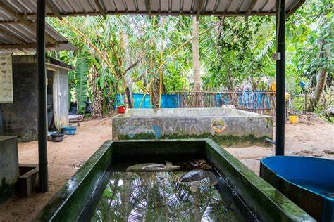

welcome to kosgoda turtle


There are 18 turtle hatcheries scattered around the nation's southern coast. One of the earliest turtle conservation initiatives in Sri Lanka is the Kosgoda turtle hatchery, which was established in 1981. The Kodgoda turtle hatchery is well known for producing the five species of turtles that may be found on the nation's beaches. The Kosgoda projects envision doing much more to protect the turtle life along the shore than only serving as a nursery. For locals and visitors from other countries to participate in and learn about the processes of turtle hatching, they conduct a variety of activities and volunteer programs.